通讯行业厂商一直在他们的供应链中寻求质量，但他们如何识别质量可能会很棘手。他们必须成功找到具有下一个项目所需的经验和专业知识的组件供应商，并对他们的选择充满信心。该过程可能具有挑战性，因此与供应商交谈以确定他们如何解决这些问题非常重要。伟创业是一家专注于五轴cnc精密零件加工厂家,专业生产制造通讯器材配件,通讯腔体,支持定制设计,免费打样，自动化检测,多工艺配套的ISO认证,SGS实地验厂的180人规模实力厂家!

一致性——通过自动化、一致性和高精度，CNC 现在可以用于以下通讯行业
加工能力——加工能力强，多条生产线设备，专业成熟的配套设备
质优材料– 所有材质均可提供材料证明，精度可达0.01,精心挑选材质使用寿命长,耐腐蚀强,韧性好
高精度——高质量的设计和生产团队确保每一个CNC加工的医疗部件的高精度
强大的产能——数百台现代化的通讯产品数控机床可承受大批量生产
快速生产——提供可靠的通讯零部件手板和快速制造解决方案
质优服务——及时与客户沟通生产进度，准时交货
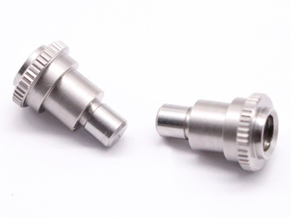

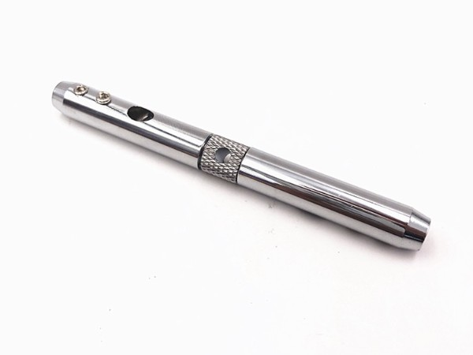
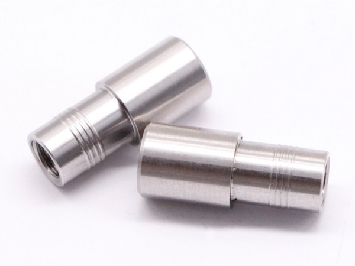
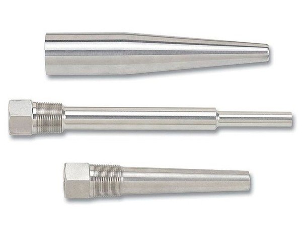
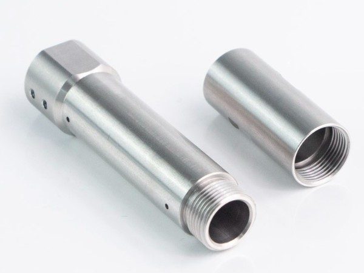
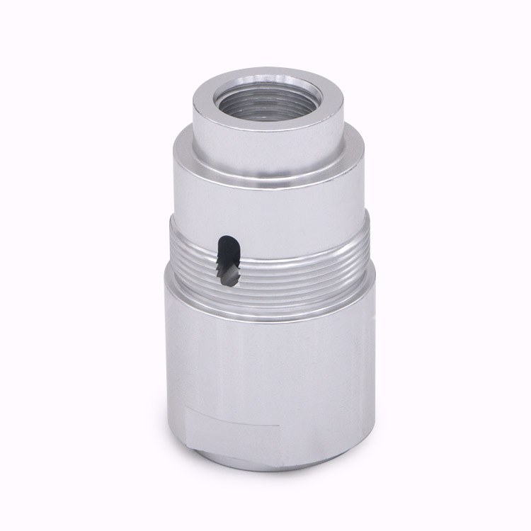
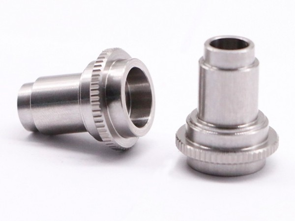
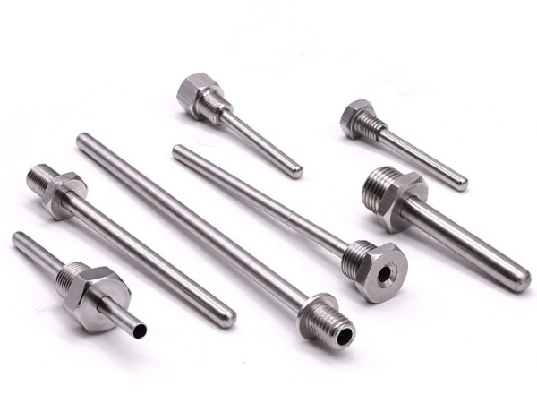
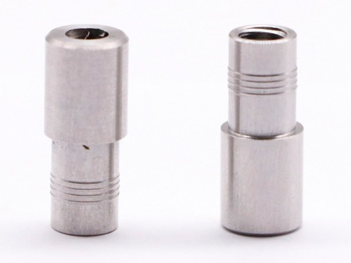
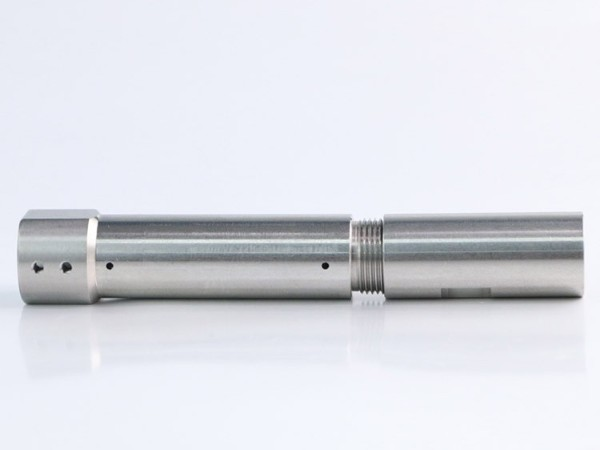
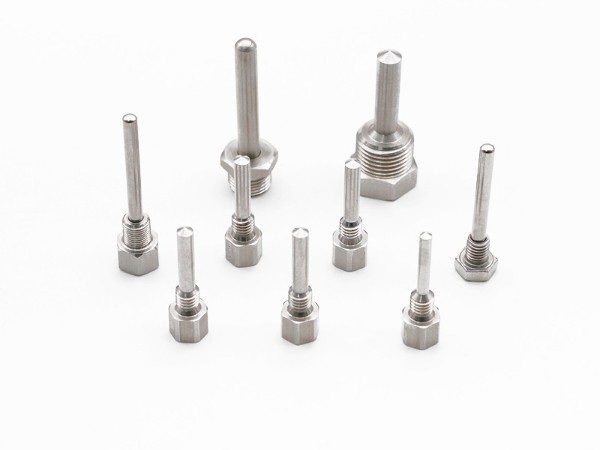
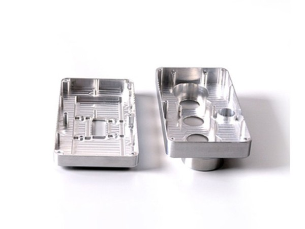
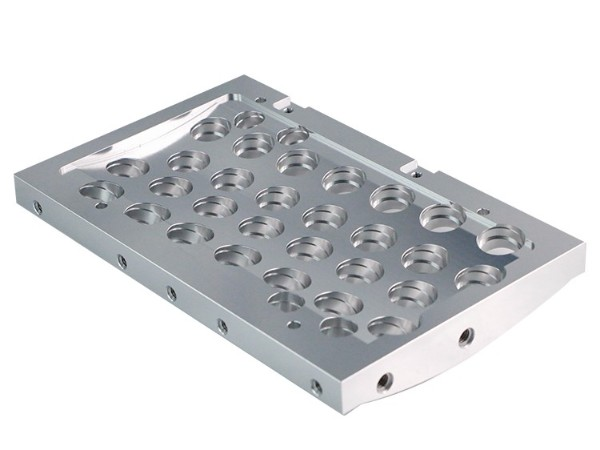
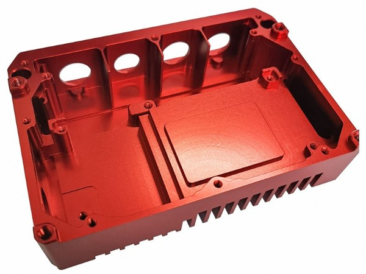
东莞市伟创业精密制造有限公司
备案号：粤ICP备17137294号-2
牛商股份提供技术支持
 伟创业
伟创业
 查看手机
查看手机


 全国服务热线
全国服务热线